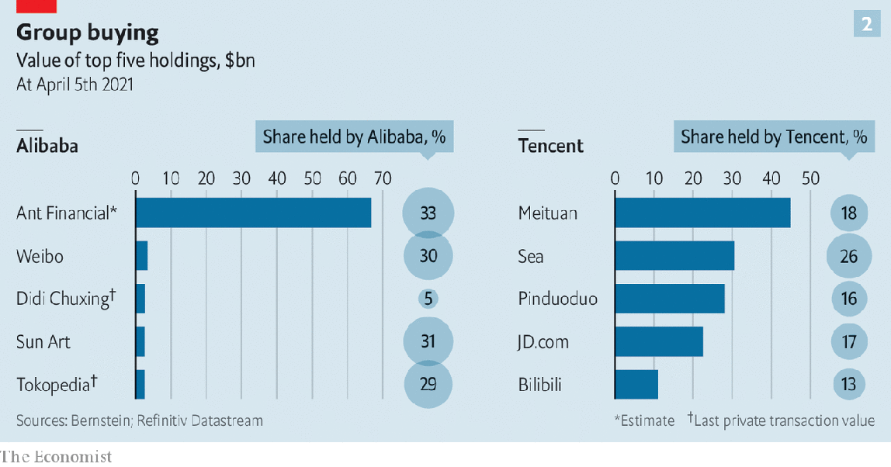

2021-04-19T03:03:44+00:00
Tycoons on a tight leash
看紧大佬
看緊大佬
China’s rulers want more control of big tech
中国政府想要加强对科技巨头的掌控
中國政府想要加強對科技巨頭的掌控
As the Communist Party whips digital platforms into line, trillions of dollars in market value are at stake
共产党挥鞭驯服数字平台，万亿美元市值岌岌可危
共產黨揮鞭馴服數字平台，萬億美元市值岌岌可危

CHINA’S TECH tycoons have not been themselves lately. In early March, at the annual session of China’s rubber-stamp parliament, Pony Ma called for stricter regulation of Tencent, the $700bn online empire he founded. Days later a rising star, Simon Hu, left his post as chief executive of Ant Group, a huge financial-technology firm affiliated with Alibaba, an e-commerce titan. Shortly after that Colin Huang stepped down as chairman of Pinduoduo, rattling investors still celebrating his upstart e-emporium’s recent announcement that it had overtaken Alibaba measured by the number of shoppers. Jack Ma, Alibaba’s outspoken co-founder and China’s most recognisable entrepreneur, has not been seen in public for months, with the exception of a video where he discusses the country’s education system.
中国的科技大佬们最近过得不大自在。3月初，在中国橡皮图章式的人大举行的年度会议上，马化腾提议加强监管腾讯——一个他自己创办的市值7000亿美元的网络帝国。几天后，后起之秀胡晓明辞去蚂蚁集团（隶属电商巨头阿里巴巴的一家大型金融科技公司）首席执行官一职。不久后，创办了拼多多的黄峥辞任公司董事长，让原本正在庆祝中的投资者深感不安——这家电商新贵刚刚才宣布以用户数衡量它已赶超阿里巴巴。阿里巴巴直言不讳的联合创始人、中国最知名的企业家马云除了现身一段视频讨论中国的教育体系外，已经好几个月没有在公开场合露面了。
中國的科技大佬們最近過得不大自在。3月初，在中國橡皮圖章式的人大舉行的年度會議上，馬化騰提議加強監管騰訊——一個他自己創辦的市值7000億美元的網絡帝國。幾天後，後起之秀胡曉明辭去螞蟻集團（隸屬電商巨頭阿里巴巴的一家大型金融科技公司）首席執行官一職。不久後，創辦了拼多多的黃崢辭任公司董事長，讓原本正在慶祝中的投資者深感不安——這家電商新貴剛剛才宣布以用戶數衡量它已趕超阿里巴巴。阿里巴巴直言不諱的聯合創始人、中國最知名的企業家馬雲除了現身一段視頻討論中國的教育體系外，已經好幾個月沒有在公開場合露面了。
Their companies’ stocks have also been behaving out of character. Having added as much as $1.2trn to their combined market capitalisation since 2016, Alibaba, Pinduoduo and Tencent have seen their share prices tumble in recent weeks (see chart 1). The unlisted Ant is thought to be worth $200bn, down from more than $300bn in October. Throw in a few dozen other big Chinese tech groups and some $700bn in shareholder value has been wiped out since mid-February.
这几家公司的股票也表现失常。自2016年以来，阿里巴巴、拼多多和腾讯的总市值增加了1.2万亿美元之多，但最近几周它们的股价均大幅下滑（见图表1）。未上市的蚂蚁集团目前估值为2000亿美元，低于去年10月的3000多亿美元。算上其他几十家中国大型科技集团，自2月中以来被抹去的股东价值已达到约7000亿美元。
這幾家公司的股票也表現失常。自2016年以來，阿里巴巴、拼多多和騰訊的總市值增加了1.2萬億美元之多，但最近幾周它們的股價均大幅下滑（見圖表1）。未上市的螞蟻集團目前估值為2000億美元，低於去年10月的3000多億美元。算上其他幾十家中國大型科技集團，自2月中以來被抹去的股東價值已達到約7000億美元。
The share price of Xiaomi, a big smartphone-maker, is down by more than 20% this year. Despite being one of the year’s most anticipated flotations, shares in Bilibili, a video-streaming service with 200m users, fell by 6% on its first day of trading in Hong Kong on March 29th. Baidu, a search giant which had regained some of its sparkle in the past year, has seen half of those gains snuffed out in less than two months. Shares in Meituan, a ride-hailing and food-delivery giant, have lost more than a quarter of their value in the same period, despite a doubling of profits last year. After this drop Chinese headlines asked of Meituan’s founder and boss, Wang Xing: “Is he not frightened at all?”
大型智能手机制造商小米今年以来股价跌幅超过20%。拥有两亿用户的视频流媒体服务商哔哩哔哩的上市是今年最令人期待的IPO，但在3月29日香港上市首日股价下跌了6%。搜索引擎巨头百度的股价在过去一年里恢复了些许光彩，但在不到两个月的时间里那些回升的部分又跌去了一半。同期，网约车和外卖巨头美团的股价下跌超过四分之一，尽管它去年的利润翻了一番。这之后中文媒体在大标题中向美团的创始人兼首席执行官发问：“王兴一点也不慌？”
大型智能手機製造商小米今年以來股價跌幅超過20%。擁有兩億用戶的視頻流媒體服務商嗶哩嗶哩的上市是今年最令人期待的IPO，但在3月29日香港上市首日股價下跌了6%。搜索引擎巨頭百度的股價在過去一年裡恢復了些許光彩，但在不到兩個月的時間裡那些回升的部分又跌去了一半。同期，網約車和外賣巨頭美團的股價下跌超過四分之一，儘管它去年的利潤翻了一番。這之後中文媒體在大標題中向美團的創始人兼首席執行官發問：“王興一點也不慌？”
Mr Wang and his fellow tech moguls indeed have plenty to fear. Investors have cooled on frothy tech stocks in America, where many Chinese giants, including Alibaba, Baidu, Bilibili and Pinduoduo, have listings. But China’s firms have been hit harder than their American counterparts. They and their shareholders, who include plenty of Western funds, are grappling with three poorly understood developments. After years of tolerating big tech’s unbridled expansion, the central government is rewriting the rules, some tacit and some explicit, for how billionaires can behave, the degree of overt state control over data, and who owns the firms’ other assets, including stakes in other businesses. This new master plan for Chinese big tech will transform one of the world’s most innovative and valuable industries.
王兴和其他科技大佬们确实有很多要担心的。阿里巴巴、百度、哔哩哔哩和拼多多等许多中国巨头都已在美国上市，而投资者对虚高的美国科技股的热情已经冷却下来。但中国公司受到的冲击要大于美国同行。这些公司和它们包括大量西方基金在内的股东正在努力应对三方面大家还不甚明了的动向。在容忍科技大公司多年不受约束的扩张后，中国的中央政府正在重写规则，包括限制亿万富翁们的言行、确定政府公开的掌控数据的程度，以及谁拥有这些企业的其他资产，包括在其他公司的持股。这些规则有的是明文规定，有的靠大家心知肚明。这个新的针对中国科技巨头的总体规划将改变世界上最具创新力和价值的行业之一。
王興和其他科技大佬們確實有很多要擔心的。阿里巴巴、百度、嗶哩嗶哩和拼多多等許多中國巨頭都已在美國上市，而投資者對虛高的美國科技股的熱情已經冷卻下來。但中國公司受到的衝擊要大於美國同行。這些公司和它們包括大量西方基金在內的股東正在努力應對三方面大家還不甚明了的動向。在容忍科技大公司多年不受約束的擴張後，中國的中央政府正在重寫規則，包括限制億萬富翁們的言行、確定政府公開的掌控數據的程度，以及誰擁有這些企業的其他資產，包括在其他公司的持股。這些規則有的是明文規定，有的靠大家心知肚明。這個新的針對中國科技巨頭的總體規劃將改變世界上最具創新力和價值的行業之一。
Start with the tycoons. Unlike their counterparts in America, tarnished by accusations that their corporate creations harm users’ privacy, spread disinformation, mistreat workers and abuse their market power, Chinese tech moguls enjoy a glittering reputation among ordinary Chinese, who see them as embodying the “Chinese Dream” of growing prosperity that propagandists tout on posters across the country. Too glittering, it now seems, for the Communist Party, which under President Xi Jinping increasingly bridles at anything that might challenge its authority. That includes being upstaged by superstar bosses.
先说大佬们。中国这些科技界巨子和他们的美国同行有一点不一样。美国巨头们被各种指责折损了光彩，包括说他们的公司侵犯用户隐私、传播虚假信息、压榨员工、滥用市场支配力等。而中国的大亨们在普通老百姓眼里熠熠生辉——他们就是铺满全国各地的海报上宣传的富强“中国梦”的化身。但现在看来，对共产党而言，他们过于耀眼了。习近平领导下的党对任何可能挑战它权威的事物都愈发不满。被明星企业家抢风头就是其中一项。
先說大佬們。中國這些科技界巨子和他們的美國同行有一點不一樣。美國巨頭們被各種指責折損了光彩，包括說他們的公司侵犯用戶隱私、傳播虛假信息、壓榨員工、濫用市場支配力等。而中國的大亨們在普通老百姓眼裡熠熠生輝——他們就是鋪滿全國各地的海報上宣傳的富強“中國夢”的化身。但現在看來，對共產黨而言，他們過於耀眼了。習近平領導下的黨對任何可能挑戰它權威的事物都愈發不滿。被明星企業家搶風頭就是其中一項。
The initial affront that led to the tech crackdown was Jack Ma’s comparison, at a public event in October, of Chinese state lenders to pawn shops. A month later China’s stockmarket regulator suspended the $37bn initial public offering of Ant, which would have been the world’s biggest ever, in Hong Kong and Shanghai. Since then the authorities have forced Ant to become a financial holding company, undermining its lucrative, asset-light business model of matching consumers with lenders.
引发这场科技巨头打压行动的是马云一次冒犯权威的发言：在去年10月的一次公开活动中，他把国有银行比作当铺。一个月后，中国股市监管机构叫停了蚂蚁集团在香港和上海规模达370亿美元的上市，这原本会是全球史上最大的IPO。此后，政府迫使蚂蚁集团转型为金融控股公司，打破了它原本为消费者和放贷者牵线搭桥的高利润、轻资产商业模式。
引發這場科技巨頭打壓行動的是馬雲一次冒犯權威的發言：在去年10月的一次公開活動中，他把國有銀行比作當鋪。一個月後，中國股市監管機構叫停了螞蟻集團在香港和上海規模達370億美元的上市，這原本會是全球史上最大的IPO。此後，政府迫使螞蟻集團轉型為金融控股公司，打破了它原本為消費者和放貸者牽線搭橋的高利潤、輕資產商業模式。
The message, says a broker in Hong Kong, is that tech leaders should “stay in their own lane, focus on their core businesses and avoid commenting on politics or economics”. It has been heard loud and clear. Pony Ma’s parliamentary performance, in which he called for strict regulation of areas that he has invested in, from e-commerce to ride-hailing, has been seen as a signal to the Chinese government that he will not get out of line. One interpretation of Mr Huang’s departure from Pinduoduo—ostensibly to explore new opportunities in areas such as food science—is that he is wary of leading what might become China’s biggest e-commerce company. He has also recently eclipsed Jack Ma in wealth, which further increased his stature. One person who knows Mr Huang says that as a diligent student of Chinese philosophy he “understands very well that it is not safe to be at the top or at an extreme”. “He saw what was going on next door and decided to leave,” says an industry watcher.
香港一家券商表示，这当中传达的信息是科技业领袖应该“别越界，专注于自己的核心业务，避免对政治或经济事务指手画脚”。这一信息在听者耳中一清二楚。马化腾在人大会议上提议对自己投资的领域（包括电商、网约车等）进行严格监管，被认为是向中国政府表态自己不会越界。黄峥离开拼多多表面上是为了在食品科学等领域探索新机会，但也有人解读为他对继续领导可能成为中国最大电商的拼多多心怀顾虑。近期他身家已经超越马云，声望进一步提升。一名认识黄峥的人士表示，对中国哲学素有研习的他“很清楚高处不胜寒的道理”。“他看到了同行身上发生的事，所以决定离开。”一位行业观察人士说。
香港一家券商表示，這當中傳達的信息是科技業領袖應該“別越界，專註於自己的核心業務，避免對政治或經濟事務指手畫腳”。這一信息在聽者耳中一清二楚。馬化騰在人大會議上提議對自己投資的領域（包括電商、網約車等）進行嚴格監管，被認為是向中國政府表態自己不會越界。黃崢離開拼多多表面上是為了在食品科學等領域探索新機會，但也有人解讀為他對繼續領導可能成為中國最大電商的拼多多心懷顧慮。近期他身家已經超越馬雲，聲望進一步提升。一名認識黃崢的人士表示，對中國哲學素有研習的他“很清楚高處不勝寒的道理”。“他看到了同行身上發生的事，所以決定離開。”一位行業觀察人士說。
This de-tycoonification matters, for the firms’ fates are bound up in investors’ eyes with their visionary founders. Although Mr Ma quit as boss of Alibaba in 2013, and stepped down as chairman a year ago, he has continued to exert control over the direction of both the e-emporium and Ant. Where the company will end up shorn of Mr Ma’s acumen is anyone’s guess. The share price of Pinduoduo fell by 8% on news of Mr Huang’s abrupt departure, possibly for similar reasons.
这种“去大亨化”事关重大，因为在投资者眼中，这些公司的命运与它们富有远见的创始人息息相关。虽然马云已在2013年辞任阿里巴巴首席执行官，并在一年前卸任董事局主席，但之后他仍控制着这个电商王国和蚂蚁集团的发展方向。少了马云的敏锐头脑，这家公司最终会走向何方，谁也不知道。黄峥突然辞任的消息传出后，拼多多的股价下跌了8%，可能也是出于类似的原因。
這種“去大亨化”事關重大，因為在投資者眼中，這些公司的命運與它們富有遠見的創始人息息相關。雖然馬雲已在2013年辭任阿里巴巴首席執行官，並在一年前卸任董事局主席，但之後他仍控制着這個電商王國和螞蟻集團的發展方向。少了馬雲的敏銳頭腦，這家公司最終會走向何方，誰也不知道。黃崢突然辭任的消息傳出後，拼多多的股價下跌了8%，可能也是出於類似的原因。
A second set of questions concerns the government’s designs for the firms’ most valuable resource—data. Its objective is to pool data and impose more state ownership and control, which could eventually amount to a kind of nationalisation. The digital firms have built some of the world’s largest and most advanced databases, which assess everything from users’ loan repayments to their friend networks, travel histories and spending habits. Ant alone is said to hold data on more than a billion people, on a par with Facebook and Google. Because of the breadth of services that many Chinese “super-apps” encompass, they have an even richer picture of users.
第二个方面的问题是政府对这些公司最宝贵的资源——数据——有何谋划。政府的目标是汇集数据，加强国家所有权和控制权，这最终可能会相当于某种国有化。这些数字公司建立了一些世界上最大、最先进的数据库，可以评估用户生活的方方面面，包括贷款还款情况、交友圈子、出行记录和消费习惯。据说仅蚂蚁集团就掌握了超过10亿人的数据，堪比Facebook和谷歌。由于中国许多“超级应用”涵盖的服务范围很广，它们更是掌握了异常丰富的用户信息。
第二個方面的問題是政府對這些公司最寶貴的資源——數據——有何謀劃。政府的目標是彙集數據，加強國家所有權和控制權，這最終可能會相當於某種國有化。這些數字公司建立了一些世界上最大、最先進的數據庫，可以評估用戶生活的方方面面，包括貸款還款情況、交友圈子、出行記錄和消費習慣。據說僅螞蟻集團就掌握了超過10億人的數據，堪比Facebook和谷歌。由於中國許多“超級應用”涵蓋的服務範圍很廣，它們更是掌握了異常豐富的用戶信息。
Credit-scoring is the front line of the battle with the government over who controls data. Over the years the People’s Bank of China (PBOC) has made feeble attempts to create a centralised scoring system. Now the central bank appears to have decided to grab more control over the tech firms’ systems. It has approved two personal-credit companies, most recently in December, in which the technology groups and state-controlled entities hold stakes. The state has so far refrained from explicitly commanding the companies to share data. In China personal data belong to the individual, not companies, so laws would need to change in order for such data to be shared with the government. But that is hardly an insurmountable obstacle for an authoritarian regime.
信用评分是科技公司与政府争夺数据控制权的前沿阵地。多年来中国人民银行在尝试创建一个中央征信系统上成效平平。现在，人行似乎已经决定转而加强控制科技公司的系统。它已批准成立了两家个人征信公司——最近一次是在去年12月——均由科技公司和国有控股实体共同持股。目前为止，国家没有明确命令这些公司分享数据。在中国，个人数据属个人而非公司所有，因此需要修改法律才能让公司把这些数据分享给政府。但对一个威权政体来说，这也不是什么不可逾越的障碍。
信用評分是科技公司與政府爭奪數據控制權的前沿陣地。多年來中國人民銀行在嘗試創建一個中央徵信系統上成效平平。現在，人行似乎已經決定轉而加強控制科技公司的系統。它已批准成立了兩家個人徵信公司——最近一次是在去年12月——均由科技公司和國有控股實體共同持股。目前為止，國家沒有明確命令這些公司分享數據。在中國，個人數據屬個人而非公司所有，因此需要修改法律才能讓公司把這些數據分享給政府。但對一個威權政體來說，這也不是什麼不可逾越的障礙。
The tech companies have resisted, with reason. The scheme would, in the words of an asset manager in Hong Kong, erode the “information edge” that especially Alibaba and Tencent, which control the bulk of relevant data, currently enjoy. The uncertainty over what types of data would be shared, how and with whom, has weighed on Chinese tech shares, says Robin Zhu of Bernstein, a broker.
科技公司有所抵抗，这也可以理解。香港一位资产管理人表示，这种策划尤其将削弱掌控大部分相关数据的阿里巴巴和腾讯目前享有的“信息优势”。券商盛博的朱镔表示，哪些类型的数据将被共享、如何共享、与谁共享，这种不确定性已对中国科技股造成压力。
科技公司有所抵抗，這也可以理解。香港一位資產管理人表示，這種策劃尤其將削弱掌控大部分相關數據的阿里巴巴和騰訊目前享有的“信息優勢”。券商盛博的朱鑌表示，哪些類型的數據將被共享、如何共享、與誰共享，這種不確定性已對中國科技股造成壓力。
The final source of uncertainty relates to the government’s plans for the giants’ other assets. The big firms are conglomerates that straddle many services and products. Over the past decade companies such as Alibaba and Tencent have also become some of China’s biggest venture capitalists (see chart 2), giving them influence over the digital economy that extends far beyond their operating businesses. Under Mr Ma, Alibaba and Ant Group have accrued assets in media, finance, logistics and health care. Tencent is a big shareholder in JD.com, another e-commerce giant, as well as in Meituan and Pinduoduo. Both Alibaba and Tencent hold stakes in Didi Chuxing, a ride-hailing firm which hopes to go public this year at a valuation of $100bn. In total the combined investment portfolios of Alibaba and Tencent are worth some $300bn, making them among the largest tech investors in the world—as well as two of the largest tech firms.
最后一个不确定性源自政府对这些巨头持有的其他资产的打算。这些大公司都是横跨许多服务和产品的企业集团。过去十年里阿里巴巴和腾讯等公司也已入列中国最大一批风险投资机构（见图表2），对数字经济的影响力远远超出自身业务范围。在马云的带领下，阿里巴巴和蚂蚁集团已经在媒体、金融、物流和医疗等领域积累了资产。腾讯是另一个电商巨头京东的大股东，也是美团和拼多多的大股东。阿里巴巴和腾讯都持有滴滴出行的股份，这家网约车公司计划今年以1000亿美元估值上市。本身已是全球最大科技公司之一的阿里巴巴和腾讯的投资组合总值约3000亿美元，这也让它们晋身全球最大的科技投资方之列。
最後一個不確定性源自政府對這些巨頭持有的其他資產的打算。這些大公司都是橫跨許多服務和產品的企業集團。過去十年里阿里巴巴和騰訊等公司也已入列中國最大一批風險投資機構（見圖表2），對數字經濟的影響力遠遠超出自身業務範圍。在馬雲的帶領下，阿里巴巴和螞蟻集團已經在媒體、金融、物流和醫療等領域積累了資產。騰訊是另一個電商巨頭京東的大股東，也是美團和拼多多的大股東。阿里巴巴和騰訊都持有滴滴出行的股份，這家網約車公司計劃今年以1000億美元估值上市。本身已是全球最大科技公司之一的阿里巴巴和騰訊的投資組合總值約3000億美元，這也讓它們晉身全球最大的科技投資方之列。
Holding patterns
持有模式
持有模式
The decision to force Ant to become a holding company, with different activities held in different subsidiaries, suggests the authorities may want to change the structure of the tech empires. Tencent recently confirmed that it is working with regulators and reviewing past investments. Its credit operation, which is similar to Ant’s but smaller, may likewise be separated into a holding company under the PBOC’s jurisdiction. News reports have suggested that the government has asked Alibaba to sell its media holdings. Alibaba has not confirmed or denied the rumours. Legal experts say that if true, this would be concerning because the government measures would reach beyond antitrust law towards something more expansive and punitive.
政府决定迫使蚂蚁集团转型为控股公司，在不同的子公司中开展不同业务，这显示当局可能想改变科技帝国的结构。腾讯最近证实了自己正与监管机构合作，核查以往的投资。它的信贷业务与蚂蚁集团的类似，但规模较小，可能会同样被分拆成一家受人行监管的控股公司。有报道称政府已要求阿里巴巴出售其持有的媒体股份。阿里巴巴并未证实或否认这一传闻。法律专家表示，假如属实，这是令人担忧的，因为政府的做法将超越反垄断法的界限，触角更广，惩罚更重。
政府決定迫使螞蟻集團轉型為控股公司，在不同的子公司中開展不同業務，這顯示當局可能想改變科技帝國的結構。騰訊最近證實了自己正與監管機構合作，核查以往的投資。它的信貸業務與螞蟻集團的類似，但規模較小，可能會同樣被分拆成一家受人行監管的控股公司。有報道稱政府已要求阿里巴巴出售其持有的媒體股份。阿里巴巴並未證實或否認這一傳聞。法律專家表示，假如屬實，這是令人擔憂的，因為政府的做法將超越反壟斷法的界限，觸角更廣，懲罰更重。
Shifts in the relationship between the state and big tech can scar foreign investors, who dominate the Chinese companies’ shareholder registers. Yahoo, an American tech group, and SoftBank, a Japanese one, learned this the hard way in 2011, when they had to accept that their large stakes in Alibaba no longer included Alipay, which Mr Ma had quietly spun off owing to regulatory concerns.
政府与科技巨头的关系变化会损害到外国投资者的利益，毕竟他们在中国公司的股东名册上地位显要。美国科技集团雅虎和日本软银在2011年就吃到了苦头，当时马云出于对监管的顾虑，悄然把支付宝从阿里巴巴剥离，雅虎和软银不得不接受自己在阿里巴巴的大量持股中不再包括支付宝。
政府與科技巨頭的關係變化會損害到外國投資者的利益，畢竟他們在中國公司的股東名冊上地位顯要。美國科技集團雅虎和日本軟銀在2011年就吃到了苦頭，當時馬雲出於對監管的顧慮，悄然把支付寶從阿里巴巴剝離，雅虎和軟銀不得不接受自己在阿里巴巴的大量持股中不再包括支付寶。
Should something similar happen again, big foreign shareholders like SoftBank, which still holds a 24.9% stake in Alibaba, and Naspers, a South African tech conglomerate that is Tencent’s biggest shareholder via an Amsterdam-listed holding company called Prosus, could suffer another hit to their investments, on top of the recent drop in share prices. On April 8th Prosus said it had reduced its stake in Tencent from 30.9% to 28.9% to raise money for other ventures.
如果再发生类似的事，像软银（目前仍持有阿里巴巴24.9%的股份）及南非科技集团Naspers（通过在阿姆斯特丹上市的控股公司Prosus成为腾讯的最大股东）等外国大股东的投资除了要承受近期股价下跌的损失之外，还可能遭受另外的打击。4月8日，Prosus表示已将所持腾讯股份从30.9%减至28.9%，以便筹集资金做其他投资。
如果再發生類似的事，像軟銀（目前仍持有阿里巴巴24.9%的股份）及南非科技集團Naspers（通過在阿姆斯特丹上市的控股公司Prosus成為騰訊的最大股東）等外國大股東的投資除了要承受近期股價下跌的損失之外，還可能遭受另外的打擊。4月8日，Prosus表示已將所持騰訊股份從30.9%減至28.9%，以便籌集資金做其他投資。
The government’s unspoken objective is to ensure that foreigners exercise no control over Chinese tech firms, even if they own shares in them. That does not suggest their property rights are top of mind. And Chinese firms are no strangers to abrupt changes of fortune. A handful of traditional conglomerates such as Anbang and HNA, which had splurged billions on accruing assets at home and abroad, were forced to shed some of those holdings in the past few years. The fate of the tycoons behind them has been mixed. A few are in jail; others have been disgraced; a few have continued to do business quietly. Their companies are often shadows of their former selves. China’s digital darlings, as well as their founders and investors, will probably avoid a similar fate, because the firms are a source of dynamism and prestige and have succeeded through innovation rather than financial engineering. But such a bleak fate is no longer unthinkable. ■
中国政府没有明言的目标是要确保外国人不能掌控中国的科技公司，即便他们拥有这些公司的股份。这并不意味着他们的产权就会被摆在首位。而中国企业早有命运瞬间逆转的先例。安邦和海航等几家曾在国内外挥洒亿万资金积累资产的传统企业集团在过去几年被迫剥离持有的部分资产。这些公司背后的大亨命运不一。有的身陷牢狱，其他人名誉损毁，还有一些继续闷声做生意。他们的公司表现往往大不如前。中国的数字宠儿——以及其创始人和投资者——也许能躲过这样的命运，毕竟这些公司是活力和声望的源泉，而且它们是通过创新而非金融工程取得成功的。但这样的黯淡前程也不再是不可想象的了。
中國政府沒有明言的目標是要確保外國人不能掌控中國的科技公司，即便他們擁有這些公司的股份。這並不意味着他們的產權就會被擺在首位。而中國企業早有命運瞬間逆轉的先例。安邦和海航等幾家曾在國內外揮灑億萬資金積累資產的傳統企業集團在過去幾年被迫剝離持有的部分資產。這些公司背後的大亨命運不一。有的身陷牢獄，其他人名譽損毀，還有一些繼續悶聲做生意。他們的公司表現往往大不如前。中國的數字寵兒——以及其創始人和投資者——也許能躲過這樣的命運，畢竟這些公司是活力和聲望的源泉，而且它們是通過創新而非金融工程取得成功的。但這樣的黯淡前程也不再是不可想象的了。